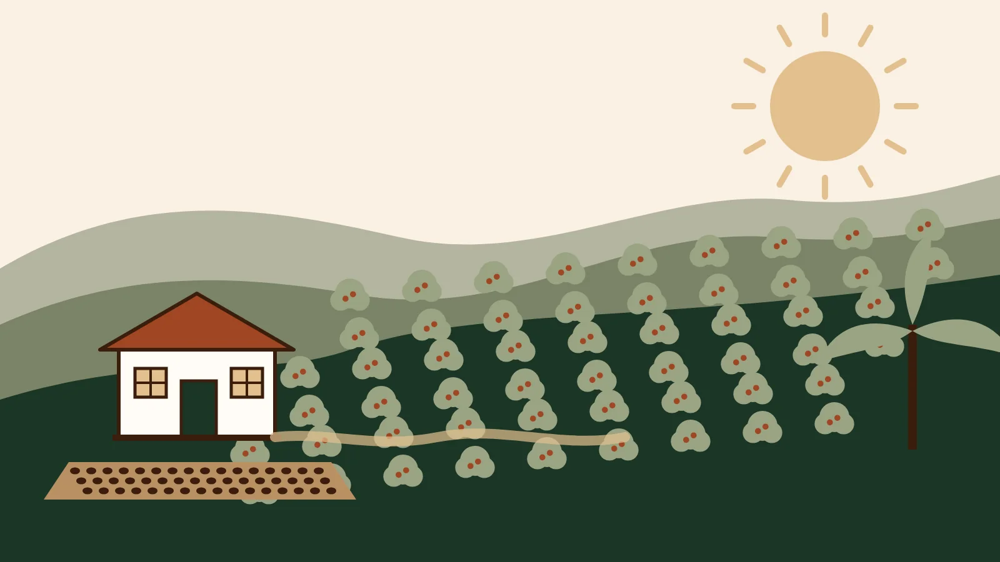
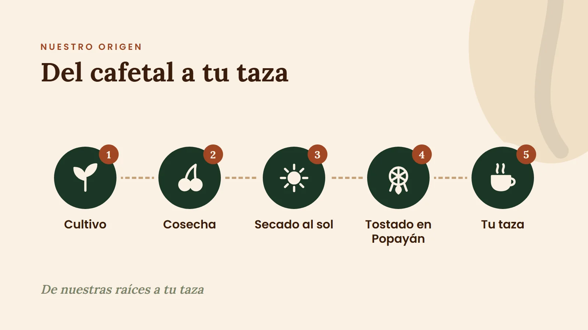

Nuestro origen
En Popayán, familias caficultoras cultivan, cosechan y secan cada grano. Nosotros lo tostamos y empacamos en origen, sin intermediarios.
¿De dónde viene tu bolsa?
Escanea el código QR de tu empaque o escribe el número de lote que aparece en la etiqueta.

Las familias
Trabajamos directamente con familias caficultoras aliadas de Popayán. Ellas entregan el café pergamino seco en nuestra planta, y registramos cada lote con la finca, la familia, la variedad y el proceso.
Con la venta directa, las familias reciben un precio justo y conservan el valor agregado de la tostión y el empaque. Cada pedido lleva una tarjeta con la historia de la familia productora.
[POR CONFIRMAR nombres e historias de las familias, con su autorización]
Popayán, Cauca
Una región reconocida por sus suelos volcánicos y su tradición cafetera. Allí está nuestra planta, desde donde tostamos, empacamos y despachamos cada pedido.
Ver ubicaciónDel cultivo a tu taza

- CosechaLas familias recogen las cerezas maduras en el cafetal.
- SecadoEl café se seca al sol en la finca y se entrega como pergamino seco en la planta.
- Registro del loteAnotamos la finca, la familia, la variedad y el proceso.
- Trilla y tostiónTrillamos y tostamos por lotes según los pedidos y las suscripciones, para que nada salga con más de 15 días de tostado.
- EmpaqueMolemos o dejamos en grano, y sellamos al vacío en bolsa kraft con válvula unidireccional.
- DespachoEnviamos tu pedido en caja de cartón reciclable, con número de guía para que lo sigas hasta tu casa.